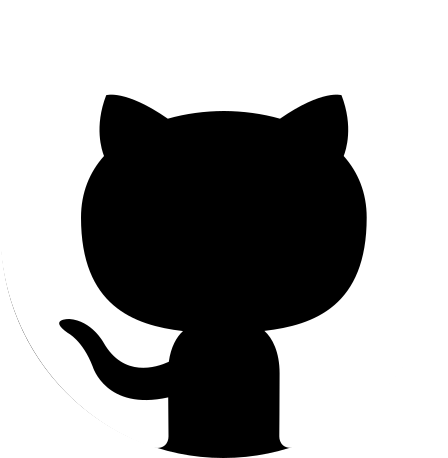
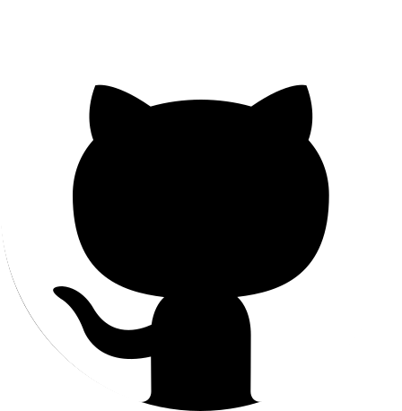

About Me
Recent graduate with an interest in GUI implementation, Compilation, and Software Engineering.
 Resume
Linkedin

Github
Resume
Linkedin

Github
 (315) 767 0374
(315) 767 0374
ericjamestewart@gmail.com
Recent graduate with an interest in GUI implementation, Compilation, and Software Engineering.
Bachelor of Science in Computer Science
 State University of New York at Oswego (2022-2024)
State University of New York at Oswego (2022-2024)
Gravity Waves Analysis Tool (GWAT)
Checkmake (A To-Do list application)
Youtube-Dl-GUI
MiniJava-Compiler
Programming Languages: Java, Python, C++, C
Operating Systems: UNIX/Linux, Windows
Libraries/Frameworks: TensorFlow, NumPy, Pandas, Open Liberty, Tkinter, ANTlR, ASM, Java Swing
Programs/Environments: Intellij IDEA, PyCharm, CLion, Visual Studio, Visual Studio Code
Specialized Knowledge: Java Concurrency, Compiler Design, Machine Learning, Artificial Intelligence, Computational Linguistics, GUI Design and Implementation